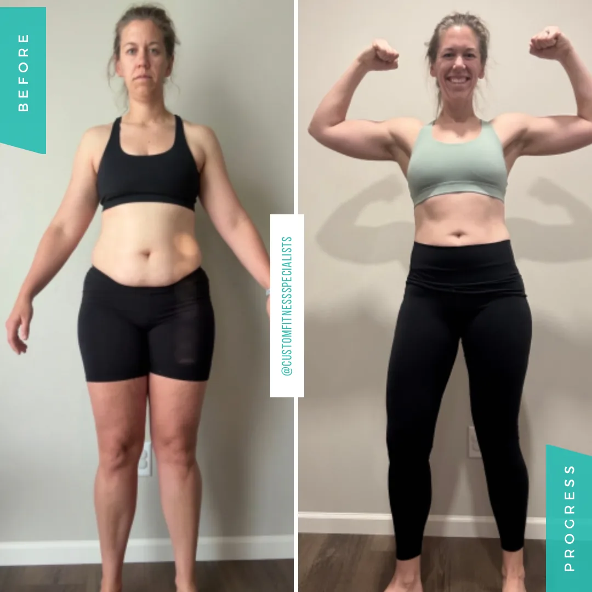

Kate
nutrition testimonial
I will never be able to fully express my gratitude for the time I spent with Lisa at Custom Fitness Specialists. I started this journey with CFS because I needed accountability and support in a season of my life where I had limited capacity. After becoming a twin mom at the end of 2023, I joined a gym to prioritize my health again. I spent over a year building my strength back. However, I could tell that my nutrition was not supporting me to see the results I wanted. I lived a very active lifestyle, but when I looked in the mirror what I saw was not how I felt. I was putting in a lot of time at the gym, but my workouts didn’t feel effective. I found that I had plateaued in my strength goals and was running on empty. That is where Lisa came into the picture and everything changed. From day 1 Lisa was so honest and clear about how she was committed to giving me the results I wanted. She created a customized nutrition plan that matched my needs. I spent 6 months learning from Lisa, checking in every week to make sure I was on track to reaching my goals. I am so incredibly proud of the progress I made! I reached and surpassed all my goals. I lost 24 pounds and 23% body fat, while still gaining over 5 pounds of lean muscle. My body composition totally changed and I gained so much confidence. I also learned about the importance of fueling my body to perform at its best, whether that is in the gym or as a busy mom to two toddler boys. I am so grateful for this commitment I made to myself and now 6 months later I truly feel the strongest and healthiest I have ever been. I am so thankful for Lisa’s wisdom, encouragement and presence along the way! I would highly recommend Lisa as a nutrition coach to any woman.